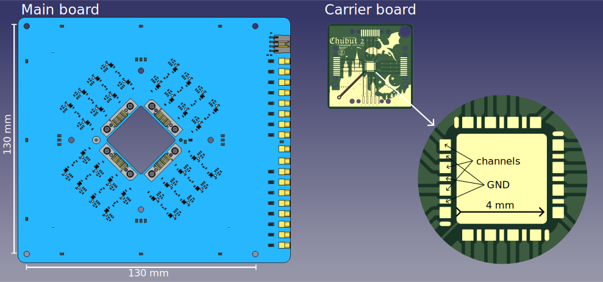
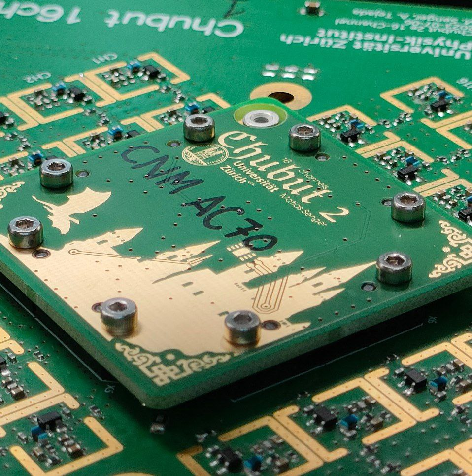
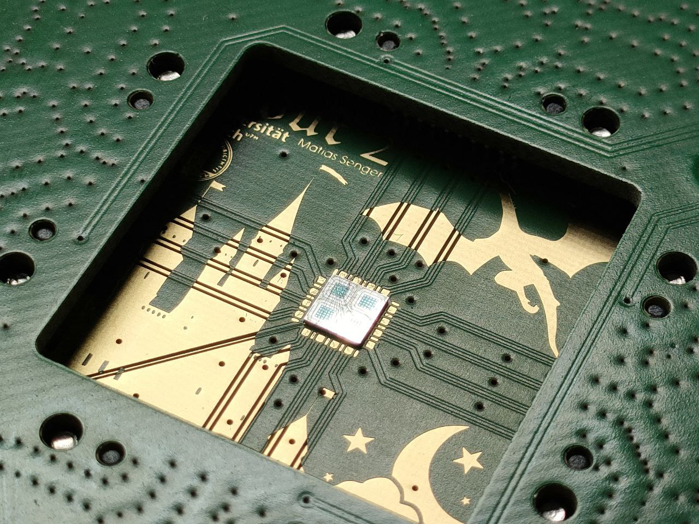
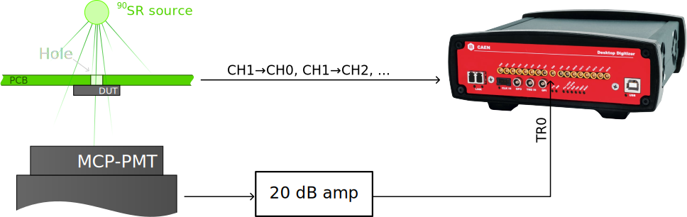

Matías Senger
August 2023
This document presents the Chubut 2 16ch board, which is a version of the Chubut 2 board but with 16 channels instead of 4. The board is introduced, as well as a characterization using a radioactive beta source.
Contents
Introduction
The Chubut 2 16ch readout board is a readout board designed for testing LGAD devices. It has 16 independent channels with built in amplification for each channel. The circuitry for each channel is replicated from the original Chubut 2 . Each channel has 2 amplification stages, making it possible to measure LGADs without the need for external amplifiers. A scheme of the board is shown in . It consists of two boards, one is the main board which contains the electronics, shown in the left of , and the other is the carrier board which only hosts the DUT, shown in the right of . The advantage of this design with a main and a carrier board is that the main board can be utilized multiple times to measure different DUTs, reducing monetary cost and work load. The carrier board fits only in one position, so it is not possible to install it wrong, and is held in place using screws. This can be seen in the pictures sown in .

Schematic diagram of the Chubut 2 16ch readout board.


Pictures of the Chubut 2 16ch readout board.
In the following sections, more details of the board are presented.
Characterization with beta source
To characterize the readout board, a TI-LGAD was mounted and exposed to radiation from a 90Sr beta source. In a schematic representation of the measuring setup is shown. The TI-LGAD used is from the RD50 FBK production, wafer 16, 2 trenches, pixel border V2 and contact type ring. This device has a 4×4 layout with a pitch of 250 µm. The 16 pixels from the DUT were connected to each output of the readout board. The measurement was performed at +20 ℃, because the board is intended to be used in the test beam setup, probably at room temperature. The signals from the outputs of the readout board, as well as the trigger signal from the MCP-PMT, were digitized using a CAEN DT5742 digitizer, as shown in the diagram.

Diagram of the arrangement and connections for the beta source testing.
The first check was to verify the integrity of the digitized waveforms. In example waveforms from a random event are shown. The first plot shows the raw data as provided by the digitizer. We see that channel 2 (signal_name DUT_2) has a negative peak, consistent with the expected polarity given the type of DUT, and the two channels called MCP_PMT_1 and MCP_PMT_2 have a positive peak, consistent with the expected polarity for the MCP-PMT followed by an inverting amplifying stage. The reason there are two waveforms corresponding to the MCP-PMT is due to technical details regarding the implementation of the digitizer; the 16 channels are split in two groups of 8 channels each, and each of these groups has an independent trigger signal which comes from an internal splitting of the TR0 input . For the channel 2 (DUT_2), which is the one that was hit by the beta particle in this example event, the corresponding MCP_PMT_1 is the correct trigger signal to use when calculating time quantities. In the same figure (, scroll to the right), two additional plots are shown with details of how each of the two relevant waveforms from this example are processed by the analysis algorithms. By zooming in, it can be seen that the analysis software performs a linear interpolation of the waveforms.
Waveforms from a particular event, as an example. In the first plot, the raw data from the digitizer is shown. The second and third plot (scroll horizontally) show how the relevant waveforms from the DUT and the MCP-PMT were processed.
Similar waveforms as the ones shown in are observed for all the channels. To get a first impression of how things work, it is useful to produce for all the individual waveforms a scatter plot in which the x axis is the time of the peak as measured from the trigger and the y axis is the amplitude of the signal. Such plot is shown in for a subset of the eventsThe reason for showing only a random subset of events is because otherwise the number of points in the plot is overwhelming and it becomes too heavy to load., without applying any filter. The x axis shows the quantity t_50 - t_50_trigger which is a measure of the peak time with respect to the trigger time. The quantity t_50 is the time at which the peak goes over its 50 %, as shown in the two right plots of , while t_50_trigger is the same quantity but for the corresponding MCP_PMT_1 or MCP_PMT_2 depending on the trigger group at which the channel belongs to, as described previously. In this figure we see that the majority of events distribute randomly in time and with amplitudes of approximately ±2 mV (zoom in vertically to see), which corresponds to waveforms without signal from a beta particle. There is another component in this distribution for which the time (x axis) is well localized, between ±1 ns (zoom in horizontally to see better) and negative amplitudes ranging from -40 mV and larger. These points represent the signals in each pixel of the DUT. The points corresponding to the two signals of the MCP-PMT are all perfectly aligned at t=0, the reason is that these signals are themselves the triggers, so the time with respect to the trigger is, by definition, 0.
Scatter plot of waveform amplitude vs time from trigger defined as the time from the waveform crossing the 50 % and the trigger crossing the 50 %.
To proceed further with the analysis, a threshold in the amplitude is imposed to all the DUT signals to select only those events in which the channels have an amplitude of 40 mV or larger in absolute value. In this way, all the empty waveforms are removed. shows the distribution of amplitudes after performing the selection of events. The plot on the left shows the empirical cumulative distribution function (ECDF) and the plot on the right (scroll horizontally) shows a histogram and a langauss fit (Landau convoluted with Gaussian) to each channel. In this last plot, the traces can be enabled for the channels not shown by clicking on the elements in the legend, only channels 1 and 2 are shown by default for the sake of clarity.
Amplitude distribution after selecting those waveforms with an amplitude larger than 40 mV in absolute value. In these plots, the quantity shown is the amplitude multiplied by -1 to make it positive. The first plot shows the empirical cumulative distribution function (ECDF) and the second plot shows the histograms together with a langauss fit (Landau convoluted with a Gaussian). To enable/disable traces, click on the elements in the legend.
In the distribution for other parameters, after applying the cuts in the amplitude, are shown (scroll horizontally if needed to see all of them). As seen, the signal to noise ratio has a median that oscillates between 120 and 135, for the rise time the median oscillates between 980 and 1010 ps, the median noise is between 610 and 660 µV, the median pulse duration above 50 % threshold is between 1.42 and 1.48 ns and the integral under the peak, called Collected charge (V s) in the plot, has a median between 115 and 138 ×10-12 V s. All these quantities are calculated individually for each waveform as shown in the two example plots to the right in . From all these distributions, and the ones shown in , it can be concluded that the system is performing properly and the response of each channel is uniform.
Other distributions obtained in the same conditions as for the ones shown in , i.e. after selecting the events by amplitude. The quantities shown in these plots correspond to the parameters shown in the analyzed waveforms to the right in . Scroll horizontally to see all of them.
Among the most important parameters to be determined using the readout board is the time resolution of the DUT. To calculate the time resolution, or, firstly, the jitterHere, jitter is understood as the fluctuations in the time at which a signal crosses some threshold, see this image taken from the Wikipeida article on jitter., the time information from each peak is extracted. This information conists on a set of 9 parameters extracted from each peak, labeled t_10, t_20, ..., t_90 that measure the time at which the peak went above the corresponding percentage of its own amplitude, i.e. applying a constant fraction discrimination, as shown in the two plots on the right in . Having these values, then it is possible to select any pair of signals, say DUT_1 and MCP_PMT_1, and calculate the time difference for some pair of kCFD values, say 20 % and 20 %. This means to compute Δt = t_20DUT_1 - t_20MCP_PMT_1 for each event. An example is shown in . The fluctuations observed in Δt correspond to the jitter for this particular choice of signals and thresholds, i.e. the fluctuation in the time for which one of the signals crosses some threshold, regarding the other as the time reference.
Example of Δt distribution for kCFD, DUT_4=40 % and kCFD, MCP_PMT_1=50 %, together with a Gaussan fit.
The pairs of signals for which the jitter is relevant are each of the DUT channels and the corresponding trigger signal according to the trigger group, as detailed previously, which is coming from the MCP-PMT time reference. The values for the kCFD thresholds have to be chosen according to some criterion. Two common choices are either to fix them at 20 % or to keep them free and choose those which minimize the jitter. In the jitter for each channel is shown; the plot in the left has kCFD optimized while the plot in the right has kCFD fixed at 50 % for each signal. It can be seen that the results are more uniform for the optimal case, yielding an average value of ~42 ps of jitter while for the right plot with kCFD fixed we obtain an average value of ~48 ps.
Jitter obtained for each readout channel and the corresponding MCP_PMT_x signal. The plot on the left shows the reuslt when the kCFD is chosen to obtain the optimal result, the plot on the right (scroll horizontally if needed) shows the result when the kCFD is kept fixed at 50 % for each signal.
To ultimately obtain the time resolution of the DUT from the data shown in , the contribution from the MCP-PMT has to be subtracted in quadrature to the jitter. This requires a prior calibration of the MCP-PMT, together with the amplifier that is being used, the digitizer, as well as the particular trigger threshold and kCFD value. This exercise was not performed so the right value is unknown, but it is expected to be in the range between 15-25 ps . However, the jitter values obtained in are compatible with values obtained in the past using similar DUTs but different readout boards (Santa Cruz board) and different digitizers (LeCroy 4 GHz, 40 GS/s oscilloscope) which oscillate between 35 and 40 ps. It has to be taken into account that these values were obtained measuring at -20 ℃, while the current study was performed at +20 ℃. Considering a contribution from the MCP-PMT signal of 20 ps, then the time resolution for each channel oscillates between 37 and 43.5 ps, which is reasonable and expected.
Conclusions
A new readout board for pixelated LGADs was designed, implemented and tested in laboratory conditions. The board has 16 readout channels, each with two amplification stages thus eliminating the need for external amplifiers. The design includes the splitting of the readout board into a main board and a carrier board which makes it very convenient to test multiple devices and reducing both monetary and work-load costs.
The characterization with beta source shows that the response of all the 16 channels of the board is uniform and performs as needed to make time resolution studies. The board is also compatible with the CAEN DT5742 digitizer.
{kind=link}